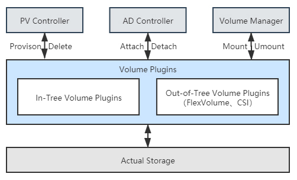
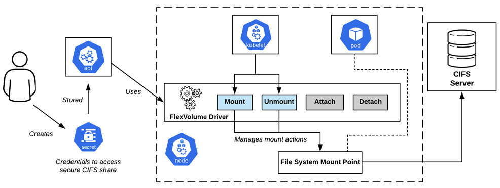
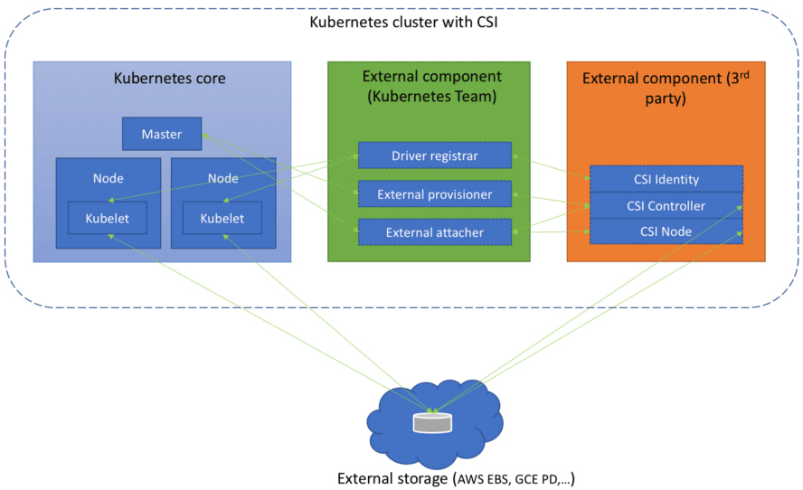

- 00 _导读 _ 什么是“The Fenix Project”？.md
- 00 开篇词 _ 如何构建一个可靠的分布式系统？.md
- 01 _ 原始分布式时代：Unix设计哲学下的服务探索.md
- 02 _ 单体系统时代：应用最广泛的架构风格.md
- 03 _ SOA时代：成功理论与失败实践.md
- 04 _ 微服务时代：SOA的革命者.md
- 05 _ 后微服务时代：跨越软件与硬件之间的界限.md
- 06 _ 无服务时代：“不分布式”云端系统的起点.md
- 07 _ 远程服务调用（上）：从本地方法到远程方法的桥梁.md
- 08 _ 远程服务调用（下）：如何选择适合自己的RPC框架？.md
- 09 _ RESTful服务（上）：从面向过程编程到面向资源编程.md
- 10 _ RESTful服务（下）：如何评价服务是否RESTful？.md
- 11 _ 本地事务如何实现原子性和持久性？.md
- 12 _ 本地事务如何实现隔离性？.md
- 13 _ 全局事务和共享事务是如何实现的？.md
- 14 _ 分布式事务之可靠消息队列.md
- 15 _ 分布式事务之TCC与SAGA.md
- 16 _ 域名解析系统，优化HTTP性能的第一步.md
- 17 _ 客户端缓存是如何帮助服务器分担流量的？.md
- 18 _ 传输链路，优化HTTP传输速度的小技巧.md
- 19 _ 如何利用内容分发网络来提高网络性能？.md
- 20 _ 常见的四层负载均衡的工作模式是怎样的？.md
- 21 _ 服务端缓存的三种属性.md
- 22 _ 分布式缓存如何与本地缓存配合，提高系统性能？.md
- 23 _ 认证：系统如何正确分辨操作用户的真实身份？.md
- 24 _ 授权（上）：系统如何确保授权的过程可靠？.md
- 25 _ 授权（下）：系统如何确保授权的结果可控？.md
- 26 _ 凭证：系统如何保证与用户之间的承诺是准确完整且不可抵赖的？.md
- 27 _ 保密：系统如何保证敏感数据无法被内外部人员窃取滥用？.md
- 28 _ 传输（上）：传输安全的基础，摘要、加密与签名.md
- 29 _ 传输（下）：数字证书与传输安全层.md
- 30 _ 验证：系统如何确保提交给服务的数据是安全的？.md
- 31 _ 分布式共识（上）：想用好分布式框架，先学会Paxos算法吧.md
- 32 _ 分布式共识（下）：Multi Paxos、Raft与Gossip，分布式领域的基石.md
- 33 _ 服务发现如何做到持续维护服务地址在动态运维中的时效性？.md
- 34 _ 路由凭什么作为微服务网关的基础职能？.md
- 35 _ 如何在客户端实现服务的负载均衡？.md
- 36 _ 面对程序故障，我们该做些什么？.md
- 37 _ 要实现某种容错策略，我们该怎么做？.md
- 38 _ 限流的目标与模式.md
- 39 _ 如何构建零信任网络安全？.md
- 40 _ 如何实现零信任网络下安全的服务访问？.md
- 41 _ 分布式架构中的可观测到底说的是什么？.md
- 42 _ 分析日志真的没那么简单.md
- 43 _ 一个完整的分布式追踪系统是什么样子的？.md
- 44 _ 聚合度量能给我们解决什么问题？.md
- 45 _ 模块导学：从微服务到云原生.md
- 46 _ 容器的崛起（上）：文件、访问、资源的隔离.md
- 47 _ 容器的崛起（下）：系统、应用、集群的封装.md
- 48 _ 以容器构建系统（上）：隔离与协作.md
- 49 _ 以容器构建系统（下）：韧性与弹性.md
- 50 _ 应用为中心的封装（上）：Kustomize与Helm.md
- 51 _ 应用为中心的封装（下）：Operator与OAM.md
- 52 _ Linux网络虚拟化（上）：信息是如何通过网络传输被另一个程序接收到的？.md
- 53 _ Linux网络虚拟化（下）：Docker所提供的容器通讯方案有哪些？.md
- 54 _ 容器网络与生态：与CNM竞争过后的CNI下的网络插件生态.md
- 55 _ 谈谈Kubernetes的存储设计理念.md
- 56 _ Kubernetes存储扩展架构：一个真实的存储系统如何接入或移除新存储设备？.md
- 57 _ Kubernetes存储生态系统：几种有代表性的CSI存储插件的实现.md
- 58 _ Kubernetes的资源模型与调度器设计.md
- 59 _ 透明通讯的涅槃（上）：通讯的成本.md
- 60 _ 透明通讯的涅槃（下）：控制平面与数据平面.md
- 61 _ 服务网格与生态：聊聊服务网格的两项标准规范.md
- 63 _ 基于Spring Boot的单体架构.md
- 64 _ 基于Spring Cloud的微服务架构.md
- 65 _ 基于Kubernetes的微服务架构.md
- 66 _ 基于Istio的服务网格架构.md
- 67 _ 基于云计算的无服务架构.md
- 春节特别放送（上）_ 有的放矢，事半功倍.md
- 春节特别放送（下）_ 积累沉淀，知行合一.md
- 用户故事 _ 詹应达：持续成长，不惧未来.md
- 结束语 _ 程序员之路.md
- 结课测试 _ 一套习题，测出你的掌握程度.md
56 _ Kubernetes存储扩展架构：一个真实的存储系统如何接入或移除新存储设备？
你好，我是周志明。
我们知道，容器存储具有很强的多样性，如何对接后端实际的存储系统，并且完全发挥出它所有的性能与功能，并不是Kubernetes团队所擅长的工作，这件事情只有存储提供商才能做到最好。所以，我们其实可以理解容器编排系统为什么会有很强烈的意愿，想把存储功能独立到外部去实现。
在上节课我已经反复提到过多次In-Tree、Out-of-Tree插件，那么今天这节课，我就会以存储插件的接口与实现为中心，带你去解析Kubernetes的容器存储生态。
Kubernetes存储架构
在正式开始讲解Kubernetes的In-Tree、Out-of-Tree存储插件前，我们有必要先去了解一点Kubernetes存储架构的知识。了解一个真实的存储系统是如何接入到新创建的Pod中，成为可以读写访问的Volume，以及当Pod被销毁时，Volume如何被回收，回归到存储系统之中的。
那么，对于刚刚所说的这几点，Kubernetes其实是参考了传统操作系统接入或移除新存储设备的做法，把接入或移除外部存储这件事情，分解为了以下三个操作：
- 决定应准备（Provision）何种存储：Provision可类比为给操作系统扩容而购买了新的存储设备。这步确定了接入存储的来源、容量、性能以及其他技术参数，它的逆操作是移除（Delete）存储。
- 将准备好的存储附加（Attach）到系统中：Attach可类比为将存储设备接入操作系统，此时尽管设备还不能使用，但你已经可以用操作系统的
fdisk -l命令查看到设备。这步确定了存储的设备名称、驱动方式等面向系统侧的信息，它的逆操作是分离（Detach）存储设备。 - 将附加好的存储挂载（Mount）到系统中：Mount可类比为将设备挂载到系统的指定位置，也就是操作系统中
mount命令的作用。这步确定了存储的访问目录、文件系统格式等面向应用侧的信息，它的逆操作是卸载（Unmount）存储设备。
实际上，前面步骤中提到的Provision、Delete、Attach、Detach、Mount、Unmount六种操作，并不是直接由Kubernetes来实现，而是在存储插件中完成的。它们会分别被Kubernetes通过两个控制器及一个管理器来进行调用，这些控制器、管理器的作用如下：
- PV控制器（PersistentVolume Controller）
“以容器构建系统”这个小章节中我介绍过，Kubernetes里所有的控制器都遵循着相同的工作模式，即让实际状态尽可能接近期望状态。PV控制器的期望状态有两个，分别是“所有未绑定的PersistentVolume都能处于可用状态”以及“所有处于等待状态的PersistentVolumeClaim都能配对到与之绑定的PersistentVolume”。
它内部也有两个相对独立的核心逻辑（ClaimWorker和VolumeWorker）来分别跟踪这两种期望状态。可以简单地理解为PV控制器实现了PersistentVolume和PersistentVolumeClaim的生命周期管理职能。在这个过程中，它会根据需要调用存储驱动插件的Provision/Delete操作。
- AD控制器（Attach/Detach Controller）
AD控制器的期望状态是“所有被调度到准备新创建Pod的节点，都附加好了要使用的存储；当Pod被销毁后，原本运行Pod的节点都分离了不再被使用的存储”。如果实际状态不符合该期望，会根据需要调用存储驱动插件的Attach/Detach操作。
- Volume管理器（Volume Manager）
Volume管理器实际上是kubelet众多管理器的其中一个，它主要作用是支持本节点中Volume执行Attach/Detach/Mount/Unmount操作。你可能注意到这里不仅有Mount/Unmount操作，也出现了Attach/Detach操作。
这是历史原因导致的，因为最初版本的Kubernetes中并没有AD控制器，Attach/Detach的职责也在kubelet中完成。而现在kubelet默认情况下已经不再会执行Attach/Detach了，但有少量旧程序已经依赖了由kubelet来实现Attach/Detach的内部逻辑，所以kubelet不得不设计一个--enable-controller-attach-detach参数，如果将其设置为false的话，就会重新回到旧的兼容模式上，由kubelet代替AD控制器来完成Attach/Detach。

这样一来，后端的真实存储经过Provision、Attach、Mount操作之后，就形成了可以在容器中挂载的Volume。当存储的生命周期完结，经过Unmount、Detach、Delete操作之后，Volume便能够被存储系统回收。而对于某些存储来说，其中有一些操作可能是无效的，比如NFS，实际使用并不需要Attach，此时存储插件只需将Attach实现为空操作即可。
FlexVolume与CSI
Kubernetes目前同时支持FlexVolume与CSI（Container Storage Interface）两套独立的存储扩展机制。FlexVolume是Kubernetes早期版本（1.2版开始提供，1.8版达到GA状态）就开始支持的扩展机制，它是只针对Kubernetes的私有的存储扩展，目前已经处于冻结状态，可以正常使用但不再发展新功能了。
CSI则是从Kubernetes 1.9开始加入（1.13版本达到GA状态）的扩展机制，如同之前我介绍过的CRI和CNI那样，CSI是公开的技术规范。任何容器运行时、容器编排引擎只要愿意支持，都可以使用CSI规范去扩展自己的存储能力，这是目前Kubernetes重点发展的扩展机制。
由于是专门为Kubernetes量身订造的，所以FlexVolume的实现逻辑与上节课我介绍的Kubernetes存储架构高度一致。FlexVolume驱动其实就是一个实现了Attach、Detach、Mount、Unmount操作的可执行文件（甚至可以仅仅是个Shell脚本）而已。该可执行文件应该存放在集群每个节点的/usr/libexec/kubernetes/kubelet-plugins/volume/exec目录里，其工作过程也就是，当AD控制器和Volume管理器需要进行Attach、Detach、Mount、Unmount操作时，自动调用它的对应方法接口，如下图所示。

如果仅仅考虑支持最基本的Static Provisioning，那实现一个FlexVolume Driver确实是非常简单的。然而也是由于FlexVolume过于简单了，导致它应用起来会有诸多不便之处，比如说：
- FlexVolume并不是全功能的驱动：FlexVolume不包含Provision和Delete操作，也就无法直接用于Dynamic Provisioning，想要实现这个功能，除非你愿意再单独编写一个External Provisioner。
- FlexVolume部署维护都相对繁琐：FlexVolume是独立于Kubernetes的可执行文件，当集群节点增加时，需要由管理员在新节点上部署FlexVolume Driver。为了避免耗费过多人力，有经验的系统管理员通常会专门编写一个DaemonSet来代替人工来完成这项任务。
- FlexVolume实现复杂交互也相对繁琐：FlexVolume的每一次操作，都是对插件可执行文件的一次独立调用，这种插件实现方式在各种操作需要相互通讯时会很别扭。比如你希望在执行Mount操作的时候，生成一些额外的状态信息，并在后面执行Unmount操作时去使用这些信息时，却只能把信息记录在某个约定好的临时文件中，这样的做法对于一个面向生产的容器编排系统来说，实在是过于简陋了。
相比起FlexVolume的种种不足，CSI可算是一个十分完善的存储扩展规范。这里“十分完善”可不是客套话，根据GitHub的自动代码行统计，FlexVolume的规范文档仅有155行，而CSI则长达2704行。
那么从总体上看，CSI规范可以分为需要容器系统去实现的组件，以及需要存储提供商去实现的组件两大部分。前者包括了存储整体架构、Volume的生命周期模型、驱动注册、Volume创建、挂载、扩容、快照、度量等内容，这些Kubernetes都已经完整地实现了，大体上包括以下几个组件：
- Driver Register：负责注册第三方插件，CSI 0.3版本之后已经处于Deprecated状态，将会被Node Driver Register所取代。
- External Provisioner：调用第三方插件的接口来完成数据卷的创建与删除功能。
- External Attacher：调用第三方插件的接口来完成数据卷的挂载和操作。
- External Resizer：调用第三方插件的接口来完成数据卷的扩容操作。
- External Snapshotter：调用第三方插件的接口来完成快照的创建和删除。
- External Health Monitor：调用第三方插件的接口来提供度量监控数据。
但是，需要存储提供商去实现的组件才是CSI的主体部分，也就是我在前面多次提到的“第三方插件”。这部分着重定义了外部存储挂载到容器过程中所涉及操作的抽象接口和具体的通讯方式，主要包括以下三个gRPC接口：
- CSI Identity接口：用于描述插件的基本信息，比如插件版本号、插件所支持的CSI规范版本、插件是否支持存储卷创建、删除功能、是否支持存储卷挂载功能等等。此外Identity接口还用于检查插件的健康状态，开发者可以通过Probe接口对外提供存储的健康度量信息。
- CSI Controller接口：用于从存储系统的角度对存储资源进行管理，比如准备和移除存储（Provision、Delete操作）、附加与分离存储（Attach、Detach操作）、对存储进行快照等等。存储插件并不一定要实现这个接口的所有方法，对于存储本身就不支持的功能，可以在CSI Identity接口中声明为不提供。
- CSI Node接口：用于从集群节点的角度对存储资源进行操作，比如存储卷的分区和格式化、将存储卷挂载到指定目录上，或者将存储卷从指定目录上卸载，等等。

与FlexVolume以单独的可执行程序的存在形式不同，CSI插件本身是由一组标准的Kubernetes资源所构成，CSI Controller接口是一个以StatefulSet方式部署的gRPC服务，CSI Node接口则是基于DaemonSet方式部署的gRPC服务。
这意味着虽然CSI实现起来要比FlexVolume复杂得多，但是却很容易安装——如同安装CNI插件及其它应用那样，直接载入Manifest文件即可，也不会遇到FlexVolume那样需要人工运维，或者自己编写DaemonSet来维护集群节点变更的问题。
此外，通过gRPC协议传递参数比通过命令行参数传递参数更加严谨，灵活和可靠，最起码不会出现多个接口之间协作只能写临时文件这样的尴尬状况。
从In-Tree到Out-of-Tree
Kubernetes原本曾内置了相当多的In-Tree的存储驱动，甚至还早于Docker宣布支持卷驱动功能，这种策略使得Kubernetes能够在云存储提供商发布官方驱动之前就将其纳入到支持范围中，同时也减轻了管理员维护的工作量，为它在诞生初期快速占领市场做出了一定的贡献。
但是，这种策略也让Kubernetes丧失了随时添加或修改存储驱动的灵活性，只能在更新大版本时才能加入或者修改驱动，导致云存储提供商被迫要与Kubernetes的发版节奏保持一致。此外，这个策略还涉及到第三方存储代码混杂在Kubernetes二进制文件中可能引起的可靠性及安全性问题。
因此，当Kubernetes成为市场主流以后——准确的时间点是从1.14版本开始，Kubernetes启动了In-Tree存储驱动的CSI外置迁移工作，按照计划，在1.21到1.22版本（大约在2021年中期）时，Kubernetes中主要的存储驱动，如AWS EBS、GCE PD、vSphere等都会迁移至符合CSI规范的Out-of-Tree实现，不再提供In-Tree的支持。
这种做法在设计上无疑是正确的，但是，这又会导致Kubernetes面临此前提过的该如何兼容旧功能的策略问题，我举个例子，下面YAML定义了一个Pod：
apiVersion: v1
kind: Pod
metadata:
name: nginx-pod-example
spec:
containers:
- name: nginx
image: nginx:latest
volumeMounts:
- name: html-pages-volume
mountPath: /usr/share/nginx/html
- name: config-volume
mountPath: /etc/nginx
volumes:
- name: html-pages-volume
hostPath: # 来自本地的存储
path: /srv/nginx/html
type: Directory
- name: config-volume
awsElasticBlockStore: # 来自AWS ESB的存储
volumeID: vol-0b39e0b08745caef4
fsType: ext4
可以发现，其中用到了类型为hostPath的Volume，这相当于Docker中驱动类型为local的Volume，不需要专门的驱动；而类型为awsElasticBlockStore的Volume，从名字上就能看出是指存储驱动为AWS EBS的Volume，当CSI迁移完成，awsElasticBlockStore从In-Tree卷驱动中移除掉之后，它就应该按照CSI的写法改写成如下形式：
- name: config-volume
csi:
driver: ebs.csi.aws.com
volumeAttributes:
- volumeID: vol-0b39e0b08745caef4
- fsType: ext4
这样的要求有悖于“升级版本不应影响还在大范围使用的已有功能”这条原则，所以Kubernetes 1.17中又提出了称为CSIMigration的解决方案，让Out-of-Tree的驱动能够自动伪装成In-Tree的接口来提供服务。
这里我想说明的是，我之所以专门来给你介绍Volume的CSI迁移，倒不是由于它算是多么重要的特性，而是这种兼容性设计本身就是Kubernetes设计理念的一个缩影，在Kubernetes的代码与功能中随处可见。好的设计需要权衡多个方面的利益，很多时候都得顾及现实的影响，要求设计向现实妥协，而不能仅仅考虑理论最优的方案。
小结
这节课，我们学习了Kubernetes的存储扩展架构，知道了一个真实的存储系统是如何接入到新创建的Pod中，成为可以读写访问的Volume，以及当Pod被销毁时，Volume如何被回收，回归到存储系统之中的。
此外我们还要明确的是，目前的Kubernetes系统中存在两种存储扩展接口，分别是FlexVolume与CSI，我们要知道这两种插件的相似与差异之处，以及这两种接口的大致的结构。
一课一思
你使用过哪些类型的存储？你了解过块存储、文件存储、对象存储等不同的存储系统之间的差异吗？可以在留言区说说你的看法，下节课我们就会来学习这部分的知识。
如果你觉得有收获，欢迎把今天的内容分享给更多的朋友。感谢你的阅读，我们下一讲再见。
© 2019 - 2023 Liangliang Lee. Powered by gin and hexo-theme-book.